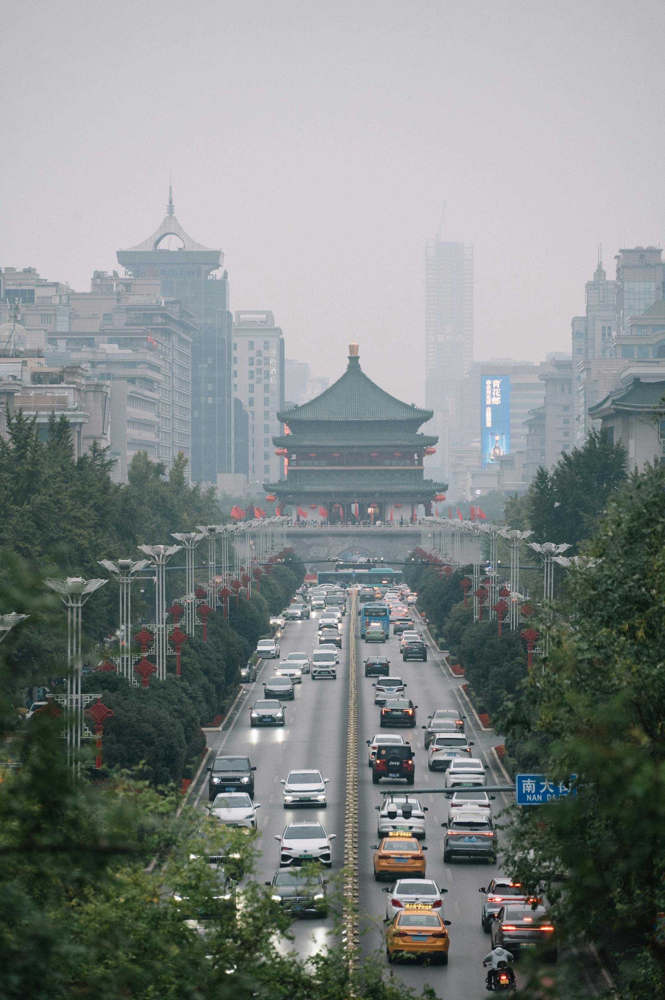
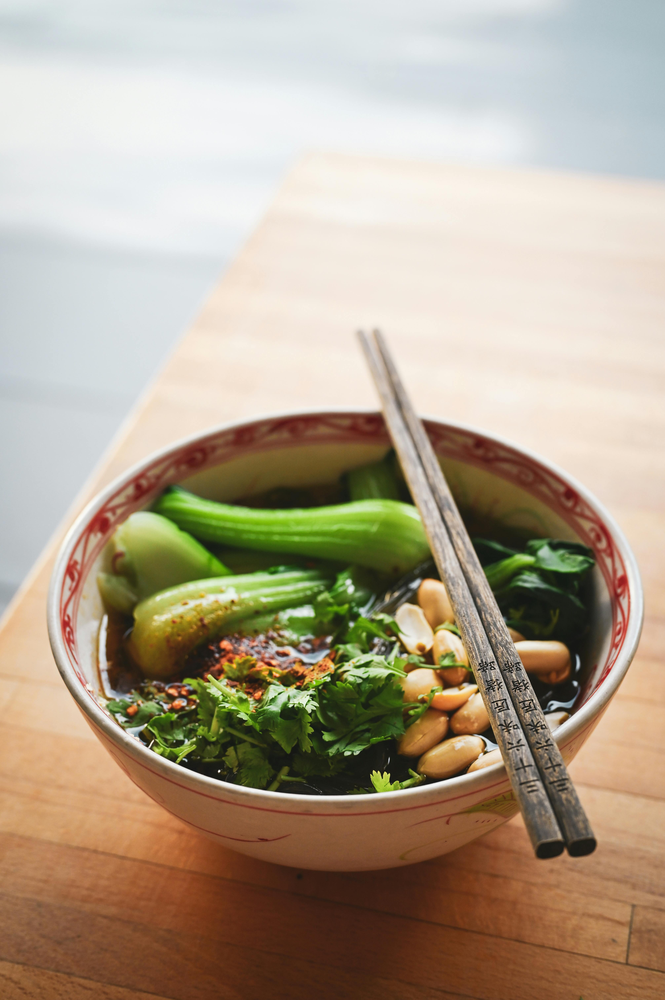
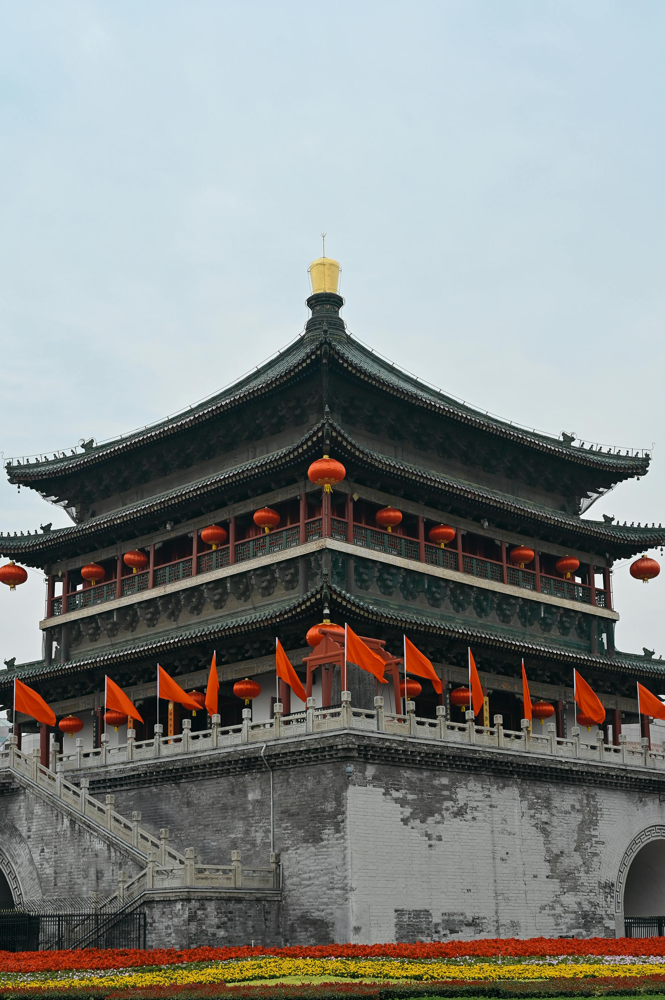
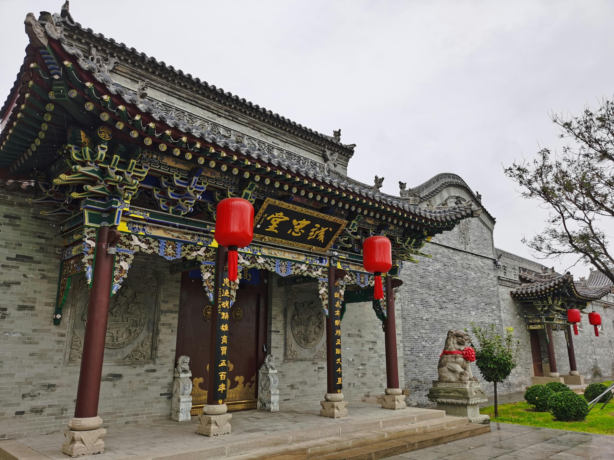
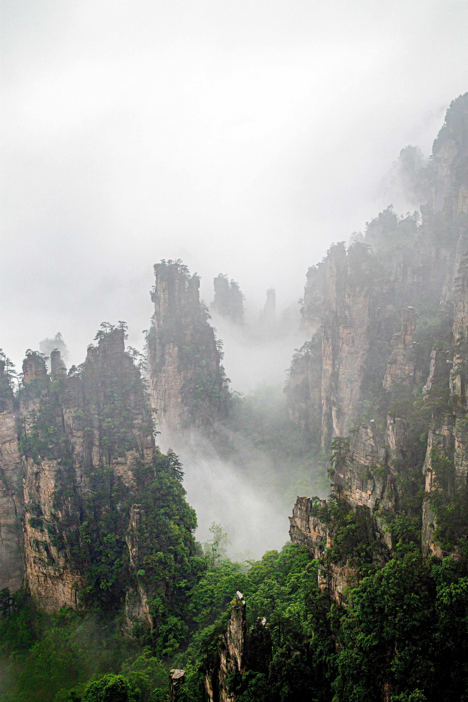

Best Travel Tips

- Visas: Ensure you apply for a visa well in advance, as processing can take time. Check the specific requirements based on your nationality.
- Language: Learn basic Mandarin phrases; this can enhance your interactions and help you navigate.
- Currency: Familiarize yourself with the Chinese Yuan (CNY) and consider carrying cash for smaller vendors.
- Cultural Etiquette: Understand local customs, like giving and receiving items with both hands and respecting elders.
- Health Precautions: Check vaccination requirements and have travel insurance to cover any health-related issues.
Best Cuisines and Dining Recommendations

- Peking Duck: A must-try for its crispy skin and flavorful meat served with pancakes and hoisin sauce.
- Sichuan Dishes: Experience the bold flavors of spicy hot pot and mapo tofu, rich in spices and aromas.
- Dim Sum: Sample a variety of small dishes, including dumplings and buns, best enjoyed with tea.
- Street Food: Try local favorites like stinky tofu and skewered lamb for an authentic culinary experience.
- Tea Culture: Participate in a traditional tea ceremony and explore different types of Chinese tea.
Best Accommodation Options

- Luxury Hotels: Stay at globally recognized brands like the Ritz-Carlton or Four Seasons for premium comfort and service.
- Boutique Hotels: Experience unique stays in boutique hotels that reflect local culture and history.
- Hostels: Affordable and great for meeting fellow travelers; look for ones with good reviews in popular areas.
- Homestays: Enjoy authentic experiences by staying with local families in rural areas or traditional neighborhoods.
- Airbnb: Offers a wide range of options from city apartments to countryside retreats, often at competitive prices.
Best Local Culture and Traditions

- Confucianism: A major influence on Chinese values, emphasizing family, respect, and social harmony.
- Festivals: Participate in Chinese New Year celebrations and Mid-Autumn Festival for unique cultural experiences.
- Traditional Arts: Explore calligraphy, painting, and pottery, which reflect deep cultural roots and artistic expression.
- Martial Arts: Engage in Tai Chi or Kung Fu classes, which are integral to Chinese culture and physical fitness.
- Family Values: Understand the importance of family ties and filial piety in Chinese society.
Top Tourist Attractions

- The Great Wall: Explore various sections like Badaling and Mutianyu, each offering stunning views and historical significance.
- Forbidden City: Visit the imperial palace in Beijing, a UNESCO World Heritage site, showcasing remarkable architecture and history.
- Terracotta Army: Discover the thousands of life-sized soldiers that guard the tomb of Emperor Qin Shi Huang.
- Li River: Enjoy a picturesque cruise from Guilin to Yangshuo, surrounded by stunning karst mountains.
- Zhangjiajie National Forest Park: Experience the breathtaking landscape that inspired the film "Avatar."
Best Transportation Guides

- High-Speed Trains: A convenient way to travel between cities, offering comfort and speed.
- Subway Systems: Use the extensive subway systems in major cities for efficient urban travel.
- Buses: Affordable long-distance buses connect smaller cities and towns; check schedules in advance.
- Taxis: Readily available, but ensure you have your destination written in Mandarin to avoid confusion.
- Domestic Flights: For long distances, consider flying to save time, as many airlines operate frequent routes.
Best Outdoor Activities and Adventure

- Hiking: Explore trails along the Great Wall, especially at less touristy sections like Jinshanling and Simatai.
- River Cruises: Take a scenic cruise on the Yangtze River for stunning views and cultural experiences.
- Rock Climbing: Experience world-class climbing in Yangshuo, known for its limestone karst formations.
- Biking: Rent a bike in rural areas like Yangshuo or explore city bike paths in Beijing and Shanghai.
- Photography Tours: Join guided photography tours to capture stunning landscapes and cultural moments.
Best Weather and Time to Visit

- Spring (March to May): A great time to visit with mild temperatures and blooming flowers; ideal for outdoor activities.
- Summer (June to August): Hot and humid; expect crowded tourist attractions, especially in popular cities.
- Autumn (September to November): Considered the best time to visit with pleasant weather and colorful foliage.
- Winter (December to February): Cold in the north, but southern regions remain mild; a good time for fewer crowds.
- Typhoon Season: June to October can bring typhoons, particularly affecting southern coastal areas.